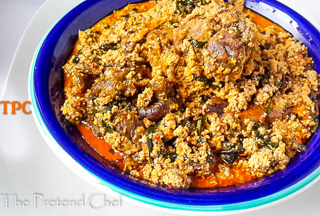

Egusi Soup

Description
This soup is native to West Africa (Nigeria). It is a great soup
for those who like to try something different every once in a while.
Egusi seeds give this soup a unique color and flavor.
If you can't find Egusi seeds, you can substitute pumpkin seeds.
Any combination of crab, shrimp and smoked fish can be used in place
of the shrimp. Drained, smoked oysters and chicken can be used in
place of the beef.
Ingredients
- Egusi
- Assorted meat
- Stockfish
- Dryfish
- Bitter leaf
Steps
- Place pumpkin seeds in a blender and blend for 30 to 40 seconds
or until mixture is a powdery paste. Set aside.
- Wash beef and cut into bite-size cubes. Season with salt. In large
pot, heat oil over medium-high heat for 4 to 5 minutes.
Add beef
and saute for 3 to 5 minutes or until brown but not cooked
through
.
- Place tomatoes, onions, and pepper in a blender and blend for about
30 seconds or until smooth. Add tomato mixture to meat, reduce heat
to medium-low, and cover. Cook for 40 to 50 minutes or until meat
is tender.
- Add tomato sauce, water, and shrimp and simmer for 10 minutes.
- Add spinach and ground pumpkin seeds and continue to simmer 10
minutes more.